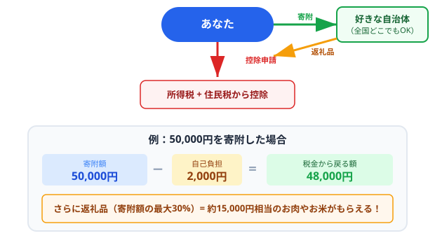
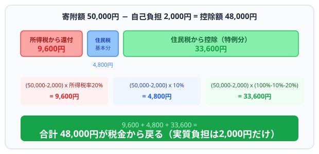
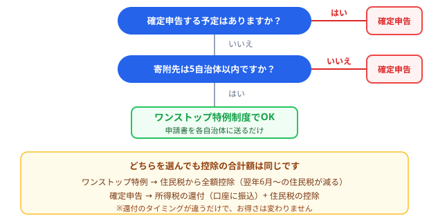

「ふるさと納税」という言葉を聞いたことがあっても、実際にどういう仕組みで税金が安くなるのか、自分はいくらまで寄附できるのか、よくわからないという方は多いのではないでしょうか。この記事では、ふるさと納税の基本的な仕組みから控除上限額の計算方法、ワンストップ特例制度と確定申告の違いまで、初心者の方にもわかりやすく解説します。
ふるさと納税とは
ふるさと納税とは、自分が応援したい自治体に寄附ができる制度です。2008年に始まったこの制度では、寄附金のうち2,000円を超える部分が所得税と住民税から控除（差し引き）されます。つまり、実質2,000円の自己負担で、各地の特産品（返礼品）を受け取ることができるのです。
「ふるさと」とついていますが、自分の出身地に限らず、日本全国どの自治体にも寄附できます。北海道の海産物が欲しければ北海道の自治体に、九州のお肉が食べたければ九州の自治体にと、自由に選ぶことができます。
ふるさと納税は「寄附」という形をとっていますが、実態としては「税金の前払い＋返礼品がもらえる」という仕組みです。本来は住んでいる自治体に納めるはずの税金の一部を、好きな自治体に振り分けることができると考えるとわかりやすいでしょう。
ふるさと納税の仕組み（図解）

ふるさと納税のメリット
ふるさと納税には、寄附をする側にとっていくつかの大きなメリットがあります。
返礼品がもらえる
最大の魅力は、寄附のお礼として自治体から届く返礼品です。お米、お肉、海鮮、フルーツなどの食品から、日用品、家電、旅行券まで、バラエティ豊かな返礼品が用意されています。返礼品の価値は寄附額の30%以内と定められていますが、実質2,000円で数千円～数万円相当の品を受け取れるため、非常にお得です。
税金の控除を受けられる
寄附金額から2,000円を引いた金額が、所得税の還付と住民税の控除として戻ってきます。例えば50,000円を寄附した場合、48,000円分が税金から差し引かれるので、実質的な負担は2,000円だけです。ただし、控除を受けるには上限額の範囲内で寄附する必要があります。
寄附金の使い道を指定できる
多くの自治体では、寄附金の使い道を選べるようになっています。子育て支援、教育、環境保全、災害復興など、自分が応援したい分野を指定できるのも大きな特徴です。通常の税金では使い道を指定できないため、ふるさと納税ならではのメリットと言えます。
地域貢献ができる
都市部に集中しがちな税収を地方に分散する効果があります。寄附を通じて地方の自治体を直接支援できるため、地域活性化に貢献できます。
控除の仕組み（所得税+住民税）
ふるさと納税の控除は、「所得税からの控除」と「住民税からの控除」の2つに分かれています。それぞれの仕組みを見ていきましょう。
所得税からの控除（還付）
所得税からの控除額は以下の計算式で求めます。
（寄附金額 - 2,000円） × 所得税率
所得税率は課税所得によって5%～45%の累進税率が適用されます。例えば所得税率20%の方が50,000円を寄附した場合、（50,000 - 2,000）× 20% = 9,600円が所得税から還付されます。
住民税からの控除（基本分）
住民税の基本分は以下の計算式です。
（寄附金額 - 2,000円） × 10%
先ほどの例では（50,000 - 2,000）× 10% = 4,800円が住民税から控除されます。
住民税からの控除（特例分）
ふるさと納税の特例として、上記で控除しきれなかった分が住民税の特例分として追加で控除されます。
（寄附金額 - 2,000円） ×（100% - 10% - 所得税率）
先ほどの例では（50,000 - 2,000）×（100% - 10% - 20%）= 33,600円です。
3つを合計すると 9,600 + 4,800 + 33,600 = 48,000円となり、寄附金額50,000円から自己負担2,000円を引いた金額と一致します。これが「実質2,000円」と言われる理由です。
控除の内訳（図解）：50,000円寄附の場合

控除上限額の計算方法
ふるさと納税で最も重要なのが「控除上限額」です。上限を超えて寄附すると、超過分は自己負担になってしまいます。
控除上限額は、住民税の特例分に上限があることから決まります。特例分は「住民税所得割額の20%」が上限です。この条件から逆算すると、控除上限額の目安は以下の式で求められます。
控除上限額 = 住民税所得割額 × 20% ÷（100% - 10% - 所得税率） + 2,000円
ただし、この計算には住民税所得割額や正確な所得税率が必要で、自分で計算するのは少し面倒です。そこで、年収や家族構成から上限額の目安を知ることができる早見表を次のセクションで紹介します。
正確な上限額を知りたい場合は、源泉徴収票や住民税の通知書を参照しながら計算するか、当サイトのシミュレーションツールをご活用ください。
年収別の控除上限目安表
以下は、給与所得者（会社員）で、配偶者控除や扶養控除の有無による控除上限額の目安です。あくまで概算なので、正確な金額はシミュレーターでご確認ください。
| 年収 | 独身・共働き | 夫婦（配偶者控除あり） | 夫婦＋子1人（16歳以上） |
|---|---|---|---|
| 300万円 | 約28,000円 | 約19,000円 | 約11,000円 |
| 400万円 | 約42,000円 | 約33,000円 | 約25,000円 |
| 500万円 | 約61,000円 | 約49,000円 | 約40,000円 |
| 600万円 | 約77,000円 | 約69,000円 | 約57,000円 |
| 700万円 | 約108,000円 | 約86,000円 | 約75,000円 |
| 800万円 | 約129,000円 | 約120,000円 | 約107,000円 |
| 900万円 | 約152,000円 | 約143,000円 | 約132,000円 |
| 1,000万円 | 約176,000円 | 約166,000円 | 約157,000円 |
※上記は2026年時点の税制に基づく概算です。社会保険料控除額は年収から推定した標準的な金額を使用しています。住宅ローン控除やiDeCoなど他の控除がある場合は上限額が下がることがあります。
ご自身の正確な控除上限額を計算してみましょう
ふるさと納税計算ツールを使ってみるワンストップ特例と確定申告の違い
ふるさと納税で控除を受けるには、「ワンストップ特例制度」または「確定申告」のいずれかの手続きが必要です。それぞれの違いを確認しましょう。
ワンストップ特例制度
確定申告をしなくても控除を受けられる便利な制度です。ただし、利用するには以下の条件を満たす必要があります。
- もともと確定申告が不要な給与所得者であること
- 1年間の寄附先が5自治体以内であること
- 寄附のたびに「ワンストップ特例申請書」を自治体に提出すること
- 翌年1月10日までに申請書が届いていること
ワンストップ特例を利用した場合、所得税からの還付はなく、控除額のすべてが翌年度の住民税から減額される形で反映されます。控除される合計額は確定申告と同じなので、どちらを選んでも損得はありません。
確定申告
以下のいずれかに当てはまる方は確定申告が必要です。
- 自営業・フリーランスの方
- 年収2,000万円を超える方
- 6自治体以上に寄附した方
- 医療費控除や住宅ローン控除（初年度）など、他の理由で確定申告する方
- ワンストップ特例の申請期限に間に合わなかった方
確定申告の場合は、寄附先の自治体から届く「寄附金受領証明書」を添付して申告します。控除は所得税の還付（振込）と住民税の減額の両方で適用されます。
| 項目 | ワンストップ特例 | 確定申告 |
|---|---|---|
| 手続き | 申請書を各自治体に郵送 | 確定申告書を税務署に提出 |
| 寄附先の制限 | 5自治体まで | 制限なし |
| 控除の反映 | 住民税のみ減額 | 所得税還付＋住民税減額 |
| 申請期限 | 翌年1月10日 | 翌年3月15日 |
| 対象者 | 確定申告不要の給与所得者 | 誰でもOK |
どちらを選ぶ？（フローチャート）

ふるさと納税の注意点
お得なふるさと納税ですが、いくつか気をつけておくべきポイントがあります。
控除上限額を超えないようにする
上限額を超えた分は純粋な持ち出し（自己負担）になります。特に年末近くに駆け込みで寄附する場合は、すでに寄附した金額と合わせて上限を超えていないか必ず確認しましょう。医療費控除や住宅ローン控除がある方は上限額が下がるので注意が必要です。
自己負担2,000円は必ず発生する
どれだけ少額の寄附でも、自己負担として2,000円はかかります。また、複数の自治体に寄附しても自己負担は合計2,000円です（寄附ごとに2,000円かかるわけではありません）。
手続きを忘れない
ワンストップ特例の申請書を出し忘れたり、確定申告をし忘れたりすると、控除が一切受けられず、ただの寄附になってしまいます。特にワンストップ特例の期限（翌年1月10日必着）は年末年始と重なるため、早めに手続きしましょう。
住民税が減るのは翌年度
今年ふるさと納税をした場合、住民税が減るのは翌年の6月以降です。すぐにお金が戻ってくるわけではないので、資金繰りには注意が必要です。確定申告による所得税の還付も、通常は申告後1～2か月後となります。
自分の住んでいる自治体への寄附は返礼品なし
自分が住民票を置いている自治体にふるさと納税しても、返礼品は受け取れません。税金の控除は受けられますが、返礼品のメリットがなくなるため、通常は他の自治体に寄附します。
まとめ
ふるさと納税は、実質2,000円の自己負担で地域の特産品がもらえるお得な制度です。ポイントを整理すると以下の通りです。
- 寄附金額から2,000円を引いた金額が所得税と住民税から控除される
- 控除上限額は年収・家族構成・その他の控除によって決まる
- 上限額を超えると自己負担が増えるので事前計算が重要
- 5自治体以内ならワンストップ特例が便利、6自治体以上は確定申告が必要
- 手続きの期限を忘れずに（ワンストップは1月10日、確定申告は3月15日）
ご自身の控除上限額がいくらか気になる方は、当サイトのふるさと納税計算ツールで簡単にシミュレーションできます。ぜひご活用ください。
あなたの控除上限額をすぐに計算できます
ふるさと納税計算ツールを使ってみる